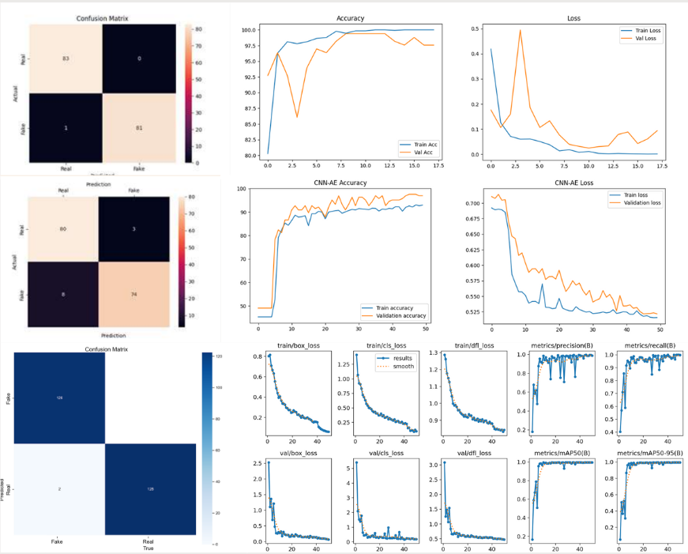

Signature Forgery Detection Using AI
Artificial Intelligence Research • EGACNN • CNN-AE
This research project focuses on comparing authentic and forged signatures using deep learning models to improve fraud prevention.
The study evaluates Ensemble Genetic Algorithm Convolutional Neural Networks (EGACNN) and CNN Autoencoders (CNN-AE) to determine which model performs better in signature verification tasks.
I implemented the machine learning pipeline, model training, evaluation, and performance comparison while documenting the experimental results for academic research.
Key Technologies
- Python
- PyTorch
- Computer Vision
- Deep Learning
- Genetic Algorithm